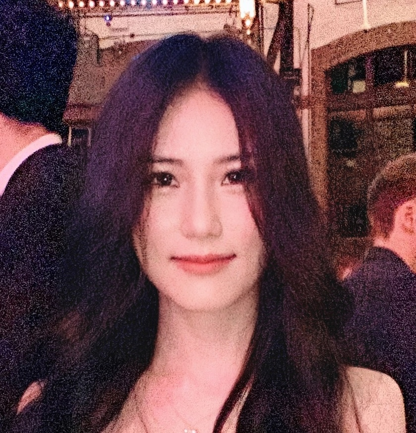

About
I build practical systems and ML tooling. This site is my portfolio + notes. I like clean design, strong execution, and measurable results.
Python
Java
Distributed Systems
HPC / MPI / OpenMP
ML Engineering
Experience
2024 — Present

The University of Chicago
Master of Computer Science
Chicago, IL
2021 — 2024

SAIC Motor Passenger Vehicle Co., Ltd.
Backend Development Engineer (Java, Python)
Shanghai, China
Fortune Global 500 · China’s largest automotive manufacturer.
2020

Tencent Technology (Shanghai) Co., Ltd.
Software Development Intern (Java)
Shanghai, China
One of the world’s largest video game vendors and among the largest social media companies.
2018 — 2021

East China Normal University
Software Engineering
Shanghai, China